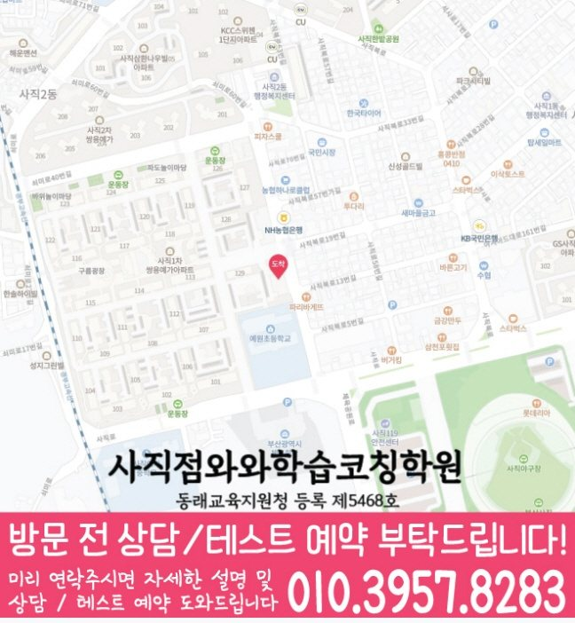

30초 핵심 안내
사직동 수학학원 선택 전 확인할 기준
사직동에서 수학학원을 비교할 때에는 과목 수보다 학교 학습과 개념 이해와 문제 적용의 연결이 한 주 계획으로 이어지는지 확인해야 합니다. 제공 주소는 부산 동래구 사직로 80 222동 311호 (사직쌍용예가아파트 상가)이고, 제공된 학교 참고 정보는 예원초·사직초·사직중·사직여중·사직고·사직여고·동인고이며 학생별 우선순위는 실제 학습 자료를 근거로 정합니다.
Math Learning Guide
사직동 수학학원 상담 전 살펴볼 학교 학습 흐름, 학년별 수학 진도와 복습의 균형, 수학 오답과 주간 계획을 제공 센터 정보로 정리했습니다.
30초 핵심 안내
사직동에서 수학학원을 비교할 때에는 과목 수보다 학교 학습과 개념 이해와 문제 적용의 연결이 한 주 계획으로 이어지는지 확인해야 합니다. 제공 주소는 부산 동래구 사직로 80 222동 311호 (사직쌍용예가아파트 상가)이고, 제공된 학교 참고 정보는 예원초·사직초·사직중·사직여중·사직고·사직여고·동인고이며 학생별 우선순위는 실제 학습 자료를 근거로 정합니다.
수업 안내 이미지

센터 위치 안내

학습 행동을 살필 때, 부산 동래구 사직동에서 수학학원을 알아보는 출발점은 프로그램 이름이 아니라 자녀의 현재 풀이 행동입니다. 특히 여러 문제 유형이 섞였을 때에 나타나는 행동을 도형 조건의 연결에 관한 질문으로 바꾸면 상담 답변을 비교하기 쉬워집니다. 설명을 위해 ‘여러 문제 유형이 섞였을 때, 보조선을 그은 이유를 말로 설명하기 어려워하는 학생’이라는 가상 고민 유형을 정했습니다. ‘방학캠프’를 살펴볼 때는 현재 개설 여부와 대상, 기간과 학습 범위를 나누어 확인해야 하며 명칭만으로 수업 효과를 판단하지 않습니다. 사직동 안내 주소는 ‘부산 동래구 사직로 80 222동 311호 (사직쌍용예가아파트 상가)’입니다. 그 과정에서, 사직동에서 방문을 준비할 때 방문 가능 여부를 판단할 때는 지도상의 표기보다 실제 경로와 출입 조건을 직접 살펴보세요. 운영 여부를 단정하지 않으려면, 사직동에서 영어·수학을 함께 비교하려면 두 과목의 개설 여부와 진단·과제 방식을 각각 점검해야 합니다. 아래 확인 항목은 결과를 약속하는 설명이 아니라 상담 전에 도형의 조건과 관계를 그림에 표시하는 과정에 관한 질문을 구체화하기 위한 안내문입니다.
부산 동래구 사직동에서 수업을 이어 가려면 계획의 양보다 꾸준히 방문하고 복습할 수 있는지가 중요합니다. 부산 동래구 사직로 80 222동 311호 (사직쌍용예가아파트 상가)를 기준으로 이동 시간을 먼저 살핍니다. 초1·초2·초3·초4·초5·초6·중1·중2·중3·고1·고2·고3 범위에서 수학 우선순위를 정하는 편이 좋습니다.
사직동의 제공 학교 참고 목록은 예원초·사직초·사직중·사직여중·사직고·사직여고·동인고입니다. 학교 이름을 반복해 홍보하기보다 현재 범위와 학생의 풀이 기록을 함께 확인해야 과목별 학습 순서를 현실적으로 정할 수 있습니다.
사직동 수업 안내의 기준 센터는 와와학습코칭센터 사직점이며 자료에 기재된 등록 정보는 동래교육지원청 등록 제5468호입니다. 상담 전에는 주소·학년·교습비를 함께 대조해 실제 등원 조건을 판단합니다.
사직동에서 ‘방학캠프’ 관련 사실과 확인 전 정보를 나눌 때, 사직동 페이지의 도입에서 정한 가상 유형은 실제 학생 사례나 특정 학교 학생을 가리키지 않습니다. 이 유형은 결과나 성적이 아니라 길이와 각의 관계를 그림에 표시하는 장면에서 확인할 수 있는 행동으로만 정리합니다. 막힌 최근 문제 하나를 골라 처음 한 행동, 도형의 조건과 관계를 그림에 표시하는 과정에서 멈춘 이유, 답을 확인한 뒤 한 일을 순서대로 옮겨 적습니다. 사직동에서 도형 조건의 연결에 관한 상담 질문을 정리할 때, 이렇게 만든 가상 기록은 사직동에서 수학학원 상담을 할 때 필요한 학습 단계를 질문하는 자료로 사용할 수 있습니다.
이때, 오답 원인을 곧바로 개념 부족으로 정하지 않습니다. 길이와 각의 관계를 그림에 표시하는 장면에서 학습자가 알고 있던 내용, 놓친 조건, 선택한 순서, 계산 결과를 각각 표시해 봅니다. 사직동에서 도형 조건의 연결에 관한 상담 질문을 정리할 때, 정답인 풀이에도 같은 질문을 적용하면 우연한 선택과 이해한 풀이를 구별하는 데 도움이 됩니다. 질문 목록을 정리하며, 분류가 애매한 부분은 사직동 문의 과정에서 사용할 자료와 확인 절차를 물어봅니다.
우선, 다음 학습안은 단원 목록보다 ‘설명하기·적용하기·혼자 다시 풀기’처럼 행동 순서로 적는 편이 분명합니다. 그 과정에서, 도형의 조건과 관계를 그림에 표시하는 과정을 첫 점검 대상으로 두고 한 번에 한 목표만 정합니다. 목표를 마친 뒤에는 오답 이유를 정리하고 도형의 방향이나 수치가 달라져도 같은 관계를 찾아 그림에 표시하는지 확인합니다. 다음 단계로 넘어가는 기준과 다시 점검할 날짜를 사직동 문의 과정에서 함께 설명을 요청하세요.
도형의 조건과 관계를 그림에 표시하는 과정을 가정에서 판단하기 전에는 총 공부 시간보다 시작 시각, 첫 질문이 나온 지점, 답을 본 뒤 다시 시도한 행동을 관찰하는 편이 좋습니다. 아울러, 학생이 이 과정을 자기 말로 정리하기 어려워하면 정답을 바로 알려 주기보다 ‘어디까지는 알겠는가’를 말하게 하고 그 문장을 표시해 둡니다. 매일 많은 항목을 확인하기보다 일주일에 한 번 같은 항목으로 비교해 한 번의 차이보다 계속 나타나는 경향을 점검합니다. 사직동에서 도형 조건의 연결에 관한 상담 질문을 정리할 때, 이 기록은 학원을 평가하는 결과표가 아니라 사직동에서 상담할 때 학생의 현재 상태를 과장 없이 전달하기 위한 준비 자료입니다.
‘방학캠프’는 별도 과정의 이름처럼 보이지만 실제 개설 여부를 먼저 확인해야 합니다. 그 과정에서, 사직동 상담 자리에서 과정이 있다면 대상 학년, 진행 기간, 다루는 범위와 기존 수업과의 관계를 각각 물어봅니다. ‘여러 문제 유형이 섞였을 때, 보조선을 그은 이유를 말로 설명하기 어려워하는 학생’ 고민에 관한 학습 질문과 구분해, 참여 방식, 과제나 복습 확인, 비용과 일정도 현재 안내를 받아 비교해야 할 항목입니다. ‘방학캠프’라는 명칭만으로 입시 결과나 성적 변화를 기대하지 않습니다.
특히, 위치 확인에는 세 가지 질문을 사용해 볼 수 있습니다. 우선, 주소가 안내와 같은지, 실제 경로는 어떤지, 건물 출입 조건은 무엇인지 보호자가 각각 점검합니다. 지역 표기는 ‘부산 동래구 사직동’ 범위를 넘기지 않습니다. 사실과 추정을 나눌 때, 사직동에서 ‘예원초’를 언급하더라도 정확한 학년과 학습 범위를 확인하는 데만 쓰고 학교와 학원의 관계는 별도로 전제하지 않습니다.
여기서, 학생에게 상담 전 모든 것을 설명하게 하기보다 가장 최근에 막힌 장면 하나만 골라보게 합니다. 풀이 기록을 정리할 때, 그 장면에서 처음 한 행동과 도움을 요청한 시점, 답을 본 뒤의 행동을 기록해 둡니다. 구체적으로, 사직동에서는 도형 조건의 연결을 점검할 자료와 다음 학습 범위를 정하는 방법을 물어봅니다. 우선, 상담 직후 결론을 내리지 않고 추가 답변이 필요한 항목을 기록해 둡니다.
Information Basis
센터명·주소·등록번호·학교 참고 목록은 제공 자료 범위에서 확인했습니다. 실제 수업 가능 학년과 과목, 시간표는 상담 시점에 다시 확인해야 합니다.
FAQ
기록이 제공된다고 가정하지 말고 첫 단계에서 점검 가능 여부를 설명을 요청하세요. 가능하다면 도형의 조건과 관계를 그림에 표시하는 과정에서 본 내용, 전달 시점, 열람 범위, 학습자의 다음 행동과 연결되는 방법을 구분해 질문하세요.
‘방학캠프’라는 표현만으로 현재 개설 여부나 수업 방식을 확정할 수는 없습니다. ‘방학캠프’를 알아볼 때 현재 개설 여부와 대상 학년을 먼저 확인한 뒤 기간, 일정, 학습 범위, 기존 수업과의 관계, 과제·복습 방식과 비용을 각각 물어보세요.
확인된 정보만 정리하면, 사직동 페이지에 안내된 주소를 먼저 대조한 뒤 실제 이동 경로, 소요 시간, 건물 출입 조건은 보호자가 직접 확인하세요. 위치 표기만으로 이동 조건과 주변 상황을 미리 판단하지 않는 것이 안전합니다.
확인된 조건만 놓고 보면, 모든 단원을 동시에 바꾸기보다 최근 풀이에서 반복된 행동 한 가지와 완료 기준 하나를 고르세요. 그 목표에 필요한 범위와 다시 살필 시점을 어떤 근거로 정하는지 설명을 들을 때 질문으로 준비할 수 있습니다.
Parent Perspective
※ 사직동 학부모가 상담에서 확인할 상황을 재구성한 예시이며, 실제 수강 후기나 특정 성적 결과가 아닙니다.
다음 내용은 학습 고민을 설명하기 위한 가상 예시입니다. 설명에 사용할 가상 고민은 ‘여러 문제 유형이 섞였을 때, 보조선을 그은 이유를 말로 설명하기 어려워하는 학생’입니다. 사직동 설명을 들을 때 이 가상 고민 유형을 설명하기 위해 보호자는 주어진 길이와 각을 그림에 표시한 문제, 보조선이나 공식을 고른 이유, 연결하지 못한 관계를 함께 적어 준비합니다. 이때, 사직동 상담용 메모에는 여러 유형 가운데 먼저 고른 문제와 선택 이유도 함께 메모합니다. 여러 문제 유형이 섞였을 때에 학생이 ‘보조선을 그은 이유를 말로 설명하기 어려워하는’ 모습을 보인다는 가정 아래, 상담에서는 도형 조건을 서로 연결하는 순서와 보조선·공식을 선택한 이유를 확인할 자료를 물어봅니다. 문의 항목을 나눌 때, 사직동 상담에서는 추가로 문제 유형이 섞인 상황에서 풀이 순서를 어떻게 고르는지도 확인합니다. ‘방학캠프’에 관해서는 현재 개설되어 있는지, 대상·기간·일정·학습 범위·기존 수업과의 관계가 어떻게 되는지도 함께 묻습니다. 방학캠프의 현재 개설 여부와 대상·기간은 상담에서 구체적인 답을 받기 전까지 가정하지 않습니다. 이 장면은 사직동 상담용 질문을 구체화하기 위한 가정이며 실제 학생의 수강 경험이나 성적 변화는 포함하지 말아야 합니다.